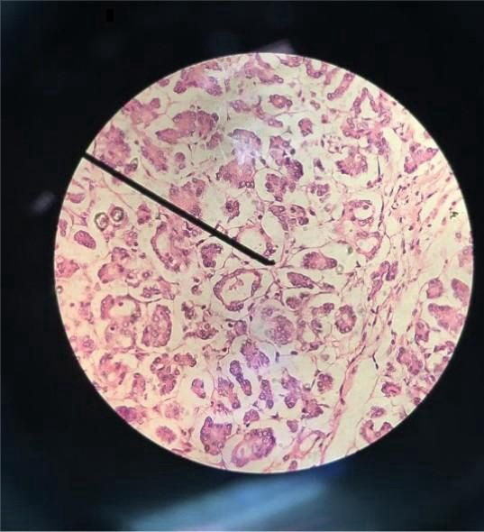

Quiz de Patologia
1. Defina o que é patologia.
Próxima
2. Diferencie lesão reversível da lesão irreversível.
Selecione uma alternativa
a) lesão reversível, é uma lesão leve e transitória, enquanto a irreversível leva a morte celular, ou apoptose ou necrose.
b) lesão reversível não há dano na célula enquanto a irreversível sofre hipóxia e se regenera.
c) lesão reversível é quando ocorre apoptose da célula, irreversível quando ocorre necrose
d) lesão reversível é quando a célula pode se regenerar, já a irreversível sempre ocorre necrose.
Próxima
Anterior
3. Qual a diferença entre hipóxia e isquemia?
Próxima
Anterior
4. Quais são os sinais morfológicos que indicam irreversibilidade?
Próxima
Anterior
5. Dê o conceito de apoptose e cite 2 exemplos.
Próxima
Anterior
6. A necrose pode ser definida como uma morte celular que acomete um organismo vivo e é seguida de autólise. Verdadeiro ou falso?
Selecione uma alternativa
Verdadeiro
Falso
Próxima
Anterior
7. Cite as causas de necrose.
Próxima
Anterior
8. Diferencie picnose celular, cariólise e cariorrexe.
Próxima
Anterior
9. Dentre as alternativas abaixo, qual representa necrose que aparece na tuberculose e qual é encontrada na sífilis, respectivamente?
Selecione uma opção
a) necrose caseosa e necrose lítica
b) necrose lítica e necrose casosa
c) necrose lítica e necrose gomosa
d) necrose caseosa e necrose gomosa
e) necrose por coagulação ou necrose lítica
Próxima
Anterior
10. Qual necrose tem seu aparecimento nas hepatites virais que ocorre nos hepatócitos?
Próxima
Anterior
11. A imagem abaixo representa qual tipo de necrose. Justifique.

Próxima
Anterior
12. Diferencie os tipos de gangrena.
Próxima
Anterior
13. O que é inflamação e quais são os seus sinais cardinais?
Próxima
Anterior
14. Explique o conceito de necrose coagulativa.
Próxima
Anterior
15. Qual é o papel dos radicais livres na necrose celular?
Próxima
Anterior
16. Diferencie necrose por coagulação de necrose por liquefação.
Próxima
Anterior
17. Qual das alternativas abaixo NÃO é um sinal morfológico de lesão irreversível?
Selecione uma opção
a) Grande tumefação mitocondrial
b) Preservação da crista mitocondrial
c) Depósitos floculares na matriz
d) Solução de continuidade da membrana
Próxima
Anterior
18. Qual dos seguintes processos leva à apoptose?
Selecione uma opção
a) Inflamação aguda
b) Reparo tecidual
c) Sinalização celular inadequada
d) Regeneração celular
Próxima
Anterior
19. A necrose liquefativa é mais comum em qual tipo de tecido?
Selecione uma opção
a) Tecido ósseo
b) Tecido cerebral
c) Tecido muscular
d) Tecido epitelial
Próxima
Anterior
20. Em qual tipo de necrose é mais provável encontrar calcificação distrófica?
Selecione uma opção
a) Necrose caseosa
b) Necrose liquefativa
c) Necrose gordurosa
d) Necrose coagulativa
Anterior
Concluir